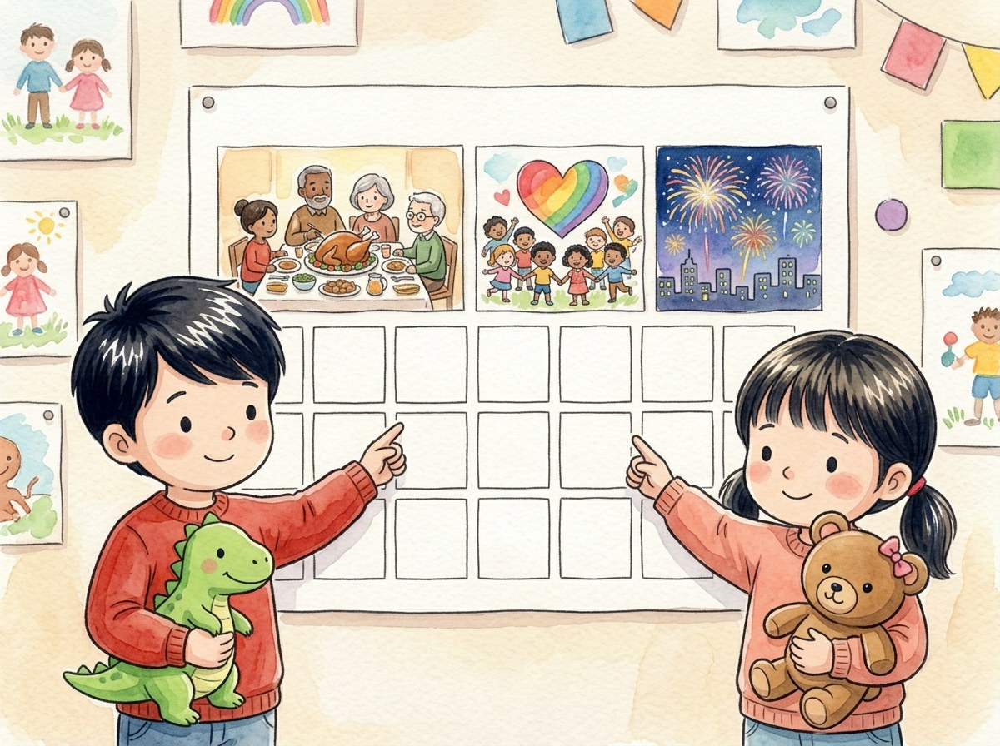

Kindergarten · Social studies · SS.K.H.1 · SS.K.CV.1
Our holidays
A story about three holidays in our country and what we celebrate.
Three new words
A special day when we celebrate or remember something important.
To say we are happy for what we have.
To think about something or someone from the past.
Tap a picture to hear the word and what it means.
The story
There is a big calendar in the classroom. Some days have special drawings.
"These are our country's holidays," says Ms. Luna.
In November comes Thanksgiving. Families eat together and give thanks for what they have.
In January, we remember Martin Luther King Jr.
He worked so that all people would be treated fairly, no matter the color of their skin.
"Just like in our class, where we all play together!" says Génesis.
The Fourth of July is our country's birthday. At night there are fireworks.
Adrián draws red fireworks. Génesis draws pink ones.
On holidays, we remember important people and times.
Questions
Listen to the question and tap the right picture.
-
Question A. What do families do on Thanksgiving?
Families eat together and give thanks for what they have.
-
Question B. Why do we remember Martin Luther King Jr.?
He worked so that all people would be treated fairly.
-
Question C. What do we celebrate on the Fourth of July?
The Fourth of July is our country's birthday, with fireworks.